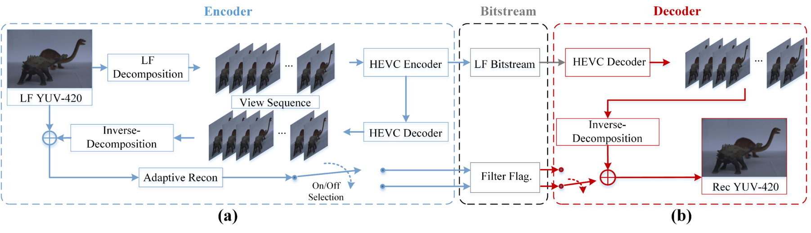
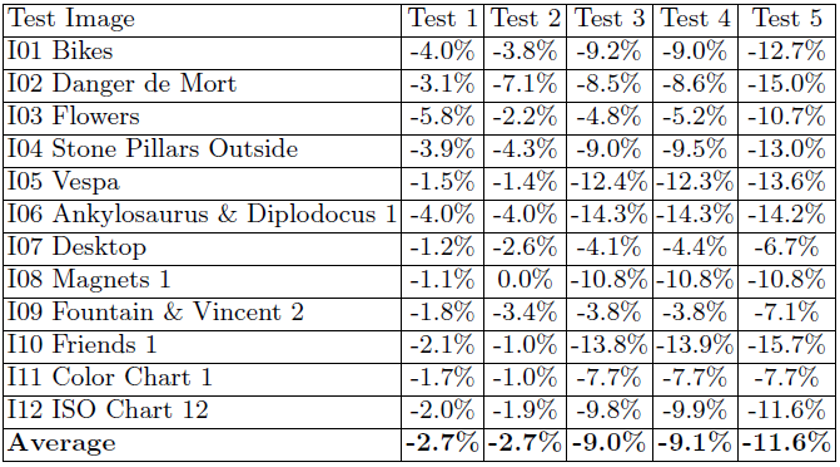
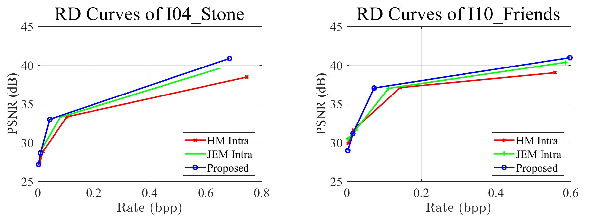

Light field (LF) attracts tremendous attention due to its capability of recording the intensity of scene objects as well as the direction of the light ray, which also dramatically increases the amount of redundant data. In this project, we explore the structure of light field (LF) and efficiently improve the performance of the pseudo sequence based lenslet image compression, by optimized sub-view rearrangement, enhanced illumination compensation and adaptive reconstruction filtering. The related work has won the best paper award in PCM 2017.
Light Field Image Coding Framework

Fig. 1 Diagram of the proposed LF compression: (a) Encoder (b) Decoder.
Performance
Test 1/2: the performance of proposed reconstruction algorithm for LF images under different scan order. Test 3/4: the performance of proposed scan order algorithm for sub-aperture images without/with proposed LF reconstruction. Test 5: overall performance with proposed reconstruction algorithm and scan order. (Anchor: zig-zag scan and no LF reconstruction)


Fig. 2 Left: Performance of proposed framework under bit-rate reduction (BDBR) metric. Right: rate-distortion curves.
Publication
C. Jia, Y. Yang, X. Zhang, S. Wang, S. Wang and S. Ma. Light Field Image Compression with Sub-apertures Reordering and Adaptive Reconstruction. PCM 2017. [PDF] [Best Paper Award]
C. Jia, Y. Yang, X. Zhang, X. Zhang, S. Wang, S. Wang and S. Ma. Optimized Inter-View Prediction Based Light Field Image Compression With Adaptive Reconstruction. ICIP 2017. [PDF] [Slides]